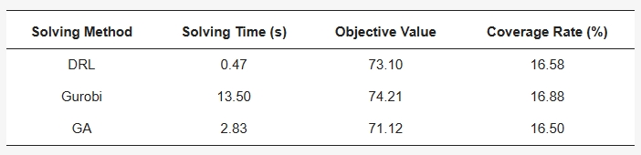

Abstract
The proliferation of shared electric scooters (E-scooters) has brought convenience to urban transportation but has also introduced challenges such as disorderly parking and an imbalance between supply and demand. Given the current inconsistent quantity and spatial distribution of shared E-scooters, coupled with inadequate research on deployment stations selection, we propose a novel maximal covering location problem (MCLP) based on distance tolerance. The model aims to maximize the coverage of user demand while minimizing the sum of distances from users to deployment stations. A deep reinforcement learning (DRL) was devised to address this optimization model. An experiment was conducted focusing on areas with high concentrations of shared E-scooter trips in Chicago. The solutions of location selection were obtained by DRL, the Gurobi solver, and the genetic algorithm (GA). The experimental results demonstrated the effectiveness of the proposed model in optimizing the layout of shared E-scooter deployment stations. This study provides valuable insights into facility location selection for urban shared transportation tools, and showcases the efficiency of DRL in addressing facility location problems (FLPs).
Background
In recent years, the flourishing micro-mobility market has provided a new solution to urban transportation issues. Shared E-scooters, as representative micro-mobility vehicles, have been widely used in cities around the world for their compactness, mobility, easy maneuverability, and adaptability to urban environments, which can bring convenience and efficiency to urban travel by saving travel time and reducing traffic congestion.
However, the widespread adoption of shared E-scooters comes with a series of problems. The use of dockless operating systems for shared E-scooters services leads to irregular parking, occupying urban space, hindering the normal use of public facilities, and seriously affecting the safety and comfort of pedestrians. This not only disrupts urban order and negatively impacts traffic fluency but also increases the management difficulty for shared E-scooter providers. The unreasonable quantity and spatial layout of shared E-scooter deployments make it challenging for users to access shared E-scooters, thus reducing the quality of the travelling experience.
To better meet the travel demand of users in different regions, increase the utilization rate of shared E-scooters, reduce improper parking behavior, and improve the travel experience of urban residents, it is crucial to research the travel demand for shared E-scooters and deployment stations selection. In previous studies, the analysis of potential demand for shared E-scooters often considered the demand within a certain distance range as the same, without considering the potential impact of distance on the intensity of demand. Therefore, we propose a Distance Tolerance MCLP, which fully considers users’ acceptance of walking distance to shared E-scooter deployment stations. In our study, Chicago serves as the study area. By analyzing shared E-scooter travel patterns, target users, traffic conditions, and points of interest (POIs) within Chicago, we utilize DRL to ascertain the optimal layout for deploying shared E-scooter stations in the study area, thus validating the efficacy of our model. Our study provides decision support for optimizing the urban micro-mobility layout for the Chicago city government and vehicle dispatching for shared E-scooter providers. Additionally, it offers an efficient solution for FLPs.
Figure 1. The count of shared E-scooter trips and the census tracts of the study area. Darker colors correspond to a greater number of trips.
Methodology
1. Formulation of the Problem
The MCLP makes a group of facilities maximize the coverage of the target area by cleverly setting the number of facilities and coverage radius. However, nearly all MCLPs assume a binary perspective regarding coverage, whereby if the distance between demand points and service facilities is less than the coverage radius, it is considered completely covered; otherwise, it is not covered. This simplistic treatment of distance fails to account for users’ tolerance thresholds regarding facility proximity, resulting in instances where certain facilities, although capable of covering a substantial user base, exceed users’ travel tolerances, consequently leading to low actual utilization rates and suboptimal user experiences. In contrast to public transportation, users are more sensitive to the distance of dockless shared E-scooter deployment stations, with an accepted threshold typically not exceeding 300 m. Thus, in the process of optimizing layout decisions, it is imperative to ensure the distance acceptance of users for shared E-scooter deployment stations.
The traditional MCLP predominantly focuses on meeting the travel demand of shared E-scooters quantitatively while disregarding users’ perceptions of the convenience of deployment stations. Therefore, we propose a Distance Tolerance MCLP, which comprehensively considers users’ tolerance for deployment station distances, taking maximizing coverage of user demand and minimizing the sum of distances between users and deployment stations as the optimization objectives, so that the accessibility and convenience of users to shared E-scooter deployment stations are perceived as the best.
2. Distance Tolerance MCLP
To formulate shared E-scooter deployment stations covering location model, the parameters and symbols involved in the model are defined as follows:
• Sets:
I: the set of demand points for shared E-scooters.
J: the set of candidate points for deploying shared E-scooters.
𝑁𝑖: the set of candidate points covering demand point i.
• Parameters:
𝑖: a demand point for shared E-scooters.
𝑗: a candidate point for shared E-scooters.
𝑑𝑖𝑗: the walking distance from demand point 𝑖 to candidate point 𝑗.
𝐷𝑚𝑎𝑥: the maximum covering distance from any demand point to a shared E-scooter deployment station.
𝐹(𝑑𝑖𝑗): the distance tolerance function.
𝑝: the number of candidate points to be established.
𝑆: the maximum covering distance for candidate point 𝑗.
𝑤𝑖: the demand intensity for demand point 𝑖.
𝑌𝑖𝑗: the coverage status of whether demand point 𝑖 is covered by candidate point 𝑗.
The distance tolerance function is defined as follows:
When the distance from the user to the deployment stations is within ğ‘‘ğ‘ meters, the user’s acceptance of that deployment station is optimal. When the distance exceeds ğ‘‘ğ‘ meters but is within ğ‘‘ğ‘ meters, the user acceptance decreases with increasing distance. When the distance surpasses ğ‘‘ğ‘ meters, the user’s acceptance of that deployment station is 0.
In this model, the first objective is to maximize the coverage of demand points by maximizing the total weight of demand. The second objective is to minimize the distances between users and deployment stations, including the pick-up and drop-off distances. To unify these objectives, a linear weighted approach is employed:

3. Deep Reinforcement Learning
In the realm of DRL, an intelligent agent engages with its environment, employing a trial-and-error methodology to learn decision-making strategies aimed at maximizing cumulative rewards. This iterative process involves five essential components: the Agent, the Environment, the State, Action, and Reward. We adopted the Attention Model proposed by Kool et al. and employed the REINFORE algorithm with a greedy rollout baseline for model training.
The algorithm’s design unfolds as follows:
Objective: Maximize the coverage of demand points while minimizing the distance between users and shared E-scooter deployment stations.
States: Represent the environment’s state, including the locations of potential deployment stations, demand points, and their respective weights.
Actions: Define possible actions as the selection of locations to establish shared E-scooter deployment stations.
Rewards: Design a reward function according to Formula (12) that integrates travel demand and distance tolerance.
Model: Utilize the Attention Model to estimate the policy ğ‘ğœƒ(ğœ‹|𝑝 ), where 𜃠represents model parameters, 𜋠is the action sequence, and 𝑝 is the current state. Incorporate problem-specific features (e.g., locations, demand, distances) into the model’s encoder to generate node embeddings. Sequentially select deployment station locations based on the decoder’s output, ensuring that the action choices align with the problem’s constraints.
Baseline: Utilize the deterministic greedy rollout of the policy to estimate the baseline, reducing the variance of the reward.
Reinforce: Compute the policy gradient using the difference between obtained reward and baseline, adjusting the model parameters to maximize expected rewards. Use Adam optimizer to update the model parameters based on the computed gradients.
Training Loop: For each epoch, sample a set of instances, perform action selection, calculate rewards, and update the model using the REINFORE algorithm. Stop training when there is minimal change in the reward function value or when the maximum number of epochs is reached.
Validation: Periodically validate the model against a separate set of instances to ensure generalization and avoid overfitting.
Results and Validation
The 992nd training epoch with the largest reward return value was selected for solving the Distance Tolerance MCLP. The results of shared E-scooter deployment stations aligned with the spatial characteristics of travel patterns, mainly distributed in the densely populated Loop and River North census tracts, exhibiting a uniform distribution pattern and avoiding excessive clustering. These points adequately covered demand points, achieving a coverage rate of 16.58%. The model’s objective function value stood at 73.06, meeting the optimization requirements for deployment station selection.
To validate the effectiveness and feasibility of the DRL in FLPs, we compared and analyzed the results obtained by the Gurobi solver and the GA under the same conditions of scale and model parameters. The comparative analysis included the solving time, objective function value, demand points coverage rate (Table 3), and spatial distribution of deployment stations (Figure 4). The results showed that in terms of objective function value and coverage, the gap between the results of DRL and Gurobi solver was smaller and they outperformed the GA. In terms of solution time, DRL showed a clear advantage, being more than 5 times faster than the GA and more than 20 times faster than the Gurobi solver, demonstrating its ability to solve quickly. Comparing the spatial distribution of the stations obtained by the three methods, we found that the overlap between the DRL results and the Gurobi solver results was high, but DRL selected one or two stations in the Lake View and Near West Side census tracts, which did not exist in the Gurobi solver results. Further analysis revealed that the Lake View and Near West census tracts had a very large count of trips, which indicates that the DRL results were more in line with the actual situation of users using shared E-scooters. Although its results were not as good as those of the Gurobi solver in terms of objective function value and coverage, it was better than the Gurobi solver in terms of spatial distribution uniformity.

Figure 4. The results of different solving methods: (a) results of DRL; (b) results of Gurobi solver; (c) results of GA. Demand points are color-coded based on their demand intensity, with darker colors indicating higher demand.
Table 3. The comparative results of different solving methods.
Conclusions
Aiming to improve the current distribution of shared E-scooter deployment stations and demand in Chicago, we proposed a maximal covering location problem model based on distance tolerance. This model considers the distance from the user’s location to the shared E-scooter deployment stations, introducing a distance tolerance function to enhance the MCLP. By accurately reflecting the change of user demand with distance, it addresses a limitation of traditional coverage models, which prioritize quantity while overlooking the distance factor.
To validate the feasibility of the model, we designed a DRL based on the attention mechanism for our experiment. By comparing and analyzing the results with those of the Gurobi solver and the GA, we found that the results of DRL were better in terms of spatial distribution, which verified the efficiency of DRL in the field of FLPs.